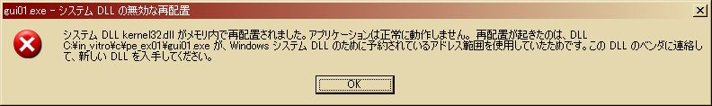

IMAGE_OPTIONAL_HEADERのメンバのいくつかを、コンパイラやリンカオプションでデフォルト値を変更し、影響を確認してみる。DataDirectoryはまだ触らない。CPUはx86-32bit(Pen4)を使用。
OSはWindows XP SP3, VCはVC++ 2008 Express Edition, コンパイラとリンカのバージョンは次の通り：
> cl Microsoft(R) 32-bit C/C++ Optimizing Compiler Version 15.00.30729.01 for 80x86 Copyright (C) Microsoft Corporation. All rights reserved.
> link Microsoft (R) Incremental Linker Version 9.00.30729.01 Copyright (C) Microsoft Corporation. All rights reserved.
- IMAGE_OPTIONAL_HEADER の全メンバ
- "/BASE", "/FIXED" の影響を確認してみる
- "/ALIGN" の影響を確認してみる
- "/OPT:WIN98"(4KB) or "/OPT:NOWIN98"(512B) の影響を確認してみる
- "Subsystem"フィールドの値で遊んでみる
- "/VERSION" の影響を確認してみる
- "/RELEASE" の影響を確認してみる
- "/STACK" の影響を確認してみる
- "/HEAP" の影響を確認してみる
- 参考URL
IMAGE_OPTIONAL_HEADER の全メンバ
まずIMAGE_OPTIONAL_HEADERの全メンバは次の通り。(from WinNT.h)
- "Standard fields"
-
WORD Magic IMAGE_OPTIONAL_HEADER用のマジックナンバー BYTE MajorLinkerVersion リンカバージョン BYTE MinorLinkerVersion 同上 DWORD SizeOfCode IMAGE_SCN_CNT_CODEを持った(=含実行コード)セクションの合計サイズ DWORD SizeOfInitializedData 初期化済みのデータセクションの合計サイズ DWORD SizeOfUninitializedData 初期化されていないデータセクションの合計サイズ。リンカがデータセクションに未初期化データを含めることが出来た場合は、0になる。 DWORD AddressOfEntryPoint 実行開始位置のRVA。実際のアドレスは、ImageBaseを加えたものになる。DLLだと0になる場合もある。リンカの"/NOENTRY"オプションを使うと、0になる。 DWORD BaseOfCode 実行コード領域が始まるRVA DWORD BaseOfData データ領域が始まるRVA - "NT additional fields"
-
DWORD ImageBase ファイルがロードされる先頭アドレス。再配置情報有り＋このアドレスにロード失敗の場合は別アドレスにロードされる。"/BASE"リンカオプションで変更可能。再配置を防ぐには "/FIXED" リンカオプションを指定。 DWORD SectionAlignment セクションがメモリに配置される境界, 丸め数値。デフォルトはx86-32bitCPUのページング単位である4KB(0x1000)で、 "/ALIGN" リンカオプションで変更可能。 DWORD FileAlignment セクションがファイルに格納される時の境界, 丸め数値。200h(=512B) or 1000h(=4KB)になる。"/OPT:WIN98"(4KB) or "/OPT:NOWIN98"(512B) リンカオプションで切り替える。 WORD MajorOperatingSystemVersion OSのバージョン WORD MinorOperatingSystemVersion 同上 WORD MajorImageVersion 実行ファイルのバージョンで、"/VERSION"リンカオプションで開発者が指定する。OSからは使われないので、開発側の都合に応じて設定する。 WORD MinorImageVersion 同上 WORD MajorSubsystemVersion かつてはWin95/WinNTのユーザーインターフェイス選択で使われていたが、現在は未使用。 WORD MinorSubsystemVersion 同上 DWORD Win32VersionValue 未使用 DWORD SizeOfImage ファイルをロードする為に必要なメモリサイズで、SectionAlignmentの倍数になる。 DWORD SizeOfHeaders DOSヘッダー, PEヘッダー, セクションテーブルを含めたファイル上のヘッダーサイズで、FileAlignmentの倍数になる。 DWORD CheckSum カーネルモードドライバやシステムDLLのいくつかで必須となるチェックサム。IMAGEHLP.DLLのCheckSumMappedFile()を使って計算可能だが、"/RELEASE"リンカオプションを指定するとリンカにより自動的に計算され、設定される。 WORD Subsystem ユーザーインターフェイス(subsystem)の種別。2(IMAGE_SUBSYSTEM_WINDOWS_GUI), 3(IMAGE_SUBSYSTEM_WINDOWS_CUI)など。 WORD DllCharacteristics DLLの特性を表すビットフィールド DWORD SizeOfStackReserve プロセスのデフォルトスレッドに割り当てられるスタック領域の予約サイズ。 "/STACK"リンカオプションで指定可能。 DWORD SizeOfStackCommit 同上の起動時にコミット済のサイズ。 "/STACK"リンカオプションで指定可能。 DWORD SizeOfHeapReserve プロセスに割り当てられるヒープ領域の予約サイズ。 "/HEAP"リンカオプションで指定可能。 DWORD SizeOfHeapCommit 同上の起動時にコミット済のサイズ。 "/HEAP"リンカオプションで指定可能。 DWORD LoaderFlags 現在では未使用 DWORD NumberOfRvaAndSizes IMAGE_DATA_DIRECTORYの数。通常は16 (DataDirectory:IMAGE_DATA_DIRECTORY x IMAGE_NUMBEROF_DIRECTORY_ENTRIES メンバについては後日)
リンカオプションで操作可能なメンバ
上記メンバから、リンカオプションで変更可能 or 影響を受けるメンバを抜き出す。
| ImageBase | "/BASE", "/FIXED" |
| SectionAlignment, SizeOfImage | "/ALIGN" |
| FileAlignment, SizeOfHeaders | "/OPT:WIN98"(4KB) or "/OPT:NOWIN98"(512B) |
| MajorImageVersion, MinorImageVersion | "/VERSION" |
| CheckSum | "/RELEASE" |
| SizeOfStackReserve, SizeOfStackCommit | "/STACK" |
| SizeOfHeapReserve, SizeOfHeapCommit | "/HEAP" |
"/BASE", "/FIXED" の影響を確認してみる
EXEとDLLで、"/BASE", "/FIXED"の影響を確認してみる。
EXEファイルで "/BASE" の影響を確認してみる
まず単純なGUIプログラムでAddressOfEntryPoint, ImageBaseを確認してみる。
gui01.c:
#include <windows.h> #include <strsafe.h> int WINAPI WinMain( HINSTANCE hInst, HINSTANCE hPrevInst, LPSTR lpCmdLine, int nCmdShow) { char buf[1024]; HANDLE hModule = NULL; hModule = GetModuleHandle(NULL); StringCbPrintf(buf, sizeof(buf), "GetModuleHandle() returns %X", hModule); MessageBox(NULL, buf, "test", MB_OK); }
コンパイル：
> cl gui01.c user32.lib
dumpbinで確認：
> dumpbin /headers gui01.exe
(...)
OPTIONAL HEADER VALUES
(...)
14CD entry point (004014CD)
(...)
400000 image base (00400000 to 0040EFFF)
実行するとGetModuleHandle()の戻り値がImageBaseと同じ400000hであることが確認出来る。
デバッガ上で動作させ、メモリレイアウトを確認してみるとエントリポイントは
400000h + 14CDh = 4014CDh
となっており、リンカによりリンクされたスタートアップルーチンから始まっていることが分かる。WinMain()のコードは".text"セクションの先頭、401000hから始まっている。
続いて、今回デバッガ上で確認した時にメモリレイアウト上「空き」が出来ていた 00700000h 付近を"/BASE"リンカオプションで指定してみる。
リンク：
> link /BASE:0x700000 gui01.obj user32.lib
dumpbinで確認：
> dumpbin /headers gui01.exe
(...)
OPTIONAL HEADER VALUES
(...)
14CD entry point (007014CD)
(...)
700000 image base (00700000 to 0070EFFF)
実行自体は問題なく、ImageBaseである700000hをMessageBox()で表示して正常終了した。
デバッガ上で動作させ、メモリレイアウトを確認したところ、確かに 700000h からヘッダーやセクションデータが展開されていることを確認出来た。
さらに、今度はシステムDLLがロードされるメモリアドレス7C800000h(kernel32.dll)を"/BASE"で指定してみる。
リンク：
> link /BASE:0x7C800000 gui01.obj user32.lib
dumpbinで確認：
> dumpbin /headers gui01.exe
(...)
OPTIONAL HEADER VALUES
(...)
14CD entry point (7C8014CD)
(...)
7C800000 image base (7C800000 to 7C80EFFF)
これを実行しようとすると、次のようなメッセージボックスが表示され異常終了する。

OllyDbgには次のログが表示されていた：
7C9A66C6 | 例外発生: C0000018 (CONFLICTING ADDRESSES)
詳細まではここでは追わないが、やはりシステムDLLがmappingされる領域にImageBaseを持って行くのはトラブルの原因になるようだ。
DLLファイルで "/BASE", "/FIXED" の影響を確認してみる
DLLを明示的に呼び出すdll_main.c:
#include <stdio.h> #include <windows.h> typedef int (CALLBACK* lp_foo)(int, int); typedef int (CALLBACK* lp_bar)(int, int); int main() { HINSTANCE hDll; lp_foo foo; lp_bar bar; hDll = LoadLibrary("dll_lib"); if (NULL == hDll) { printf("dll load error.\n"); return 1; } printf("dll module handle = %x\n", hDll); foo = (lp_foo)GetProcAddress(hDll, "foo"); if (!foo) { printf("GetProcAddress error(foo).\n"); FreeLibrary(hDll); return 2; } printf("foo() was found at %x\n", foo); bar = (lp_foo)GetProcAddress(hDll, "bar"); if (!bar) { printf("GetProcAddress error(bar).\n"); FreeLibrary(hDll); return 3; } printf("bar() was found at %x\n", bar); printf("foo(2, 3) = %d\n", foo(2, 3)); printf("bar(2, 3) = %d\n", bar(2, 3)); FreeLibrary(hDll); return 0; }
コンパイル：
> cl dll_main.c
foo()とbar()関数をexportするdll_lib.c:
#include <windows.h> int __declspec(dllexport) foo(int a, int b) { OutputDebugString("foo() start"); return a + b; } int __declspec(dllexport) bar(int a, int b) { OutputDebugString("bar() start"); return a * b; } BOOL WINAPI DllMain(HINSTANCE hInstance, DWORD dwReason, LPVOID lpvReserved) { switch (dwReason) { case DLL_PROCESS_ATTACH: OutputDebugString("DllMain() : DLL_PROCESS_ATTACH"); break; case DLL_THREAD_ATTACH: OutputDebugString("DllMain() : DLL_THREAD_ATTACH"); break; case DLL_THREAD_DETACH: OutputDebugString("DllMain() : DLL_THREAD_DETACH"); break; case DLL_PROCESS_DETACH: OutputDebugString("DllMain() : DLL_PROCESS_DETACH"); break; default: break; } return TRUE; }
コンパイル：
> cl /c dll_lib.c
リンク：
> link /DLL /OUT:dll_lib.dll dll_lib.obj
dumpbinで確認：
> dumpbin /headers dll_lib.dll
(...)
OPTIONAL HEADER VALUES
(...)
12D3 entry point (100012D3)
(...)
10000000 image base (10000000 to 1000CFFF)
実行：
> dll_main.exe dll module handle = 10000000 foo() was found at 10001000 bar() was found at 10001020 foo(2, 3) = 5 bar(2, 3) = 6
DLLのモジュールhandleがImageBaseと一致していることが確認出来る。
では、今回デバッガ上で確認した時にメモリレイアウト上「空き」が出来ていた 00700000h 付近を"/BASE"リンカオプションで指定してみる。
リンク：
> link /DLL /OUT:dll_lib.dll /BASE:0x700000 dll_lib.obj
dumpbinで確認：
> dumpbin /headers dll_lib.dll
(...)
OPTIONAL HEADER VALUES
(...)
12D3 entry point (007012D3)
(...)
700000 image base (00700000 to 0070CFFF)
実行：
> dll_main.exe dll module handle = 700000 foo() was found at 701000 bar() was found at 701020 foo(2, 3) = 5 bar(2, 3) = 6
予想通り、ImageBaseの変更に合わせてモジュールhandleおよび関数本体(コード)の位置も変わっている。
では、いよいよ"/BASE"でdll_main.exeと同じ400000hをImageBaseに設定してみる。
リンク：
> link /DLL /OUT:dll_lib.dll /BASE:0x400000 dll_lib.obj
dumpbinで確認：
> dumpbin /headers dll_lib.dll
(...)
OPTIONAL HEADER VALUES
(...)
12D3 entry point (004012D3)
(...)
400000 image base (00400000 to 0040CFFF)
実行：
> dll_main.exe dll module handle = 3a0000 foo() was found at 3a1000 bar() was found at 3a1020 foo(2, 3) = 5 bar(2, 3) = 6
既にdll_main.exeが展開されているため、3A0000h以降に再配置されたことが確認出来る。実際にデバッガ上でも、LoadLibrary()後に3A0000hからdll_lib.dllのPEイメージが展開されたことを確認出来た。
あとは"/FIXED"を組み合わせた時の挙動となる。
リンク：
> link /DLL /OUT:dll_lib.dll /BASE:0x400000 /FIXED dll_lib.obj
dumpbinで確認：
> dumpbin /headers dll_lib.dll
(...)
OPTIONAL HEADER VALUES
(...)
12D3 entry point (004012D3)
(...)
400000 image base (00400000 to 0040BFFF)
実行：
> dll_main.exe dll load error.
デバッガを確認する前に、"/FIXED"の有無で変化したヘッダー情報をdumpbinから抜き出してみる。
まず IMAGE_FILE_HEADER の Characteristics に変化が見られる。
- "/FIXED"無し
-
FILE HEADER VALUES (...) 2102 characteristics Executable 32 bit word machine DLL - "/FIXED"有り
-
FILE HEADER VALUES (...) 2103 characteristics Relocations stripped <<< 追加 Executable 32 bit word machine DLL - このように"/FIXED"有りだと"Relocations stripped"フラグが加わる。
- セクションにも変化が見られた。"DUMPBIN /HEADERS"の最後のSummary情報を比べてみる。
- "/FIXED"無し
-
Summary 2000 .data 2000 .rdata 1000 .reloc 7000 .text - "/FIXED"有り
-
Summary 2000 .data 2000 .rdata 7000 .text - "/FIXED"無しの場合は".reloc"セクションが含まれていたが、"/FIXED"を指定した方には見当たらない。
OllyDbgで見てみると、LoadLibrary()失敗のところで次のデバッグログが出力されていた：
7C9884DF | "LDR: LdrRelocateImageWithBias() failed 0xc0000018 \ LDR: OldBase : 00400000 LDR: NewBase : 003A0000 LDR: Diff : 0x7c94d6fa0012f83c LDR: NextOffset : 00000000 LDR: *NextOffset : 0x0 LDR: SizeOfBlock : 0x3a0000"
ImageBaseを変更しようとしたが失敗しているようだ。
以上、"/BASE"と"/FIXED"を指定することで故意にEXE側のメモリ領域とconflictさせる実験により、具体的な挙動を確認出来た。
DLLと"/NOENTRY"オプションの実験
今回サンプルで作成したdll_lib.cには、DllMain()関数を用意している。DUMPBINでも EntryPoint に値が設定されており、CRTの用意したエントリポイントを通じてDllMain()が呼ばれていることをデバッガ上で確認出来る(OutputDebugString()のログ出力)。
ここで "/NOENTRY" リンカオプションを使い、EntryPointがどう設定されるか、DllMain()の呼び出しがどうなるか確認する。
リンク：
> link /DLL /OUT:dll_lib.dll /NOENTRY dll_lib.obj kernel32.lib
※ここまでkernel32.libを指定する必要が無かったが、"/NOENTRY"を指定した途端にOutputDebugString()が見つからなくなったので、急遽リンカにkernel32.libを追加。
dumpbinで確認：
> dumpbin /headers dll_lib.dll
(...)
OPTIONAL HEADER VALUES
(...)
0 entry point
(...)
デバッガ上で実行し、OutputDebugString()のログ出力を確認すると、DllMain()が呼ばれなくなっていることを確認出来た。
"/ALIGN" の影響を確認してみる
cui01.c:
#include <stdio.h> int main(int argc, char *argv[]) { printf("Hello, World!\n"); return 0; }
コンパイル：
> cl /c cui01.c
特にオプションを付けずにリンク：
>link cui01.obj
dumpbinで確認：
> dumpbin /headers cui01.exe
(...)
OPTIONAL HEADER VALUES
(...)
1000 base of code
A000 base of data
(...)
1000 section alignment
(...)
F000 size of image
(...)
SECTION HEADER #1
.text name
8884 virtual size # -> 1000hByteで丸めると9000h
1000 virtual address (00401000 to 00409883)
8A00 size of raw data
(...)
SECTION HEADER #2
.rdata name
1D94 virtual size # -> 1000hByteで丸めると2000h
A000 virtual address (0040A000 to 0040BD93)
1E00 size of raw data
(...)
SECTION HEADER #3
.data name
2AC8 virtual size # -> 1000hByteで丸めると3000h
C000 virtual address (0040C000 to 0040EAC7)
1000 size of raw data
(...)
Summary
3000 .data
2000 .rdata
9000 .text
なお"base of code"のRVA(1000h)はヘッダー用のセクション1000h(1ページ)分押し上げられた数値と思われる。".code"セクションは9000hに丸められるので、"base of data"のRVA(A000h)は
1000h + 9000h = A000h
として算出されたと思われる。
デバッガ上で動作させ、cui01.exeのメモリロード状況を確認：
| 開始アドレス | サイズ | セクション/内容 |
| 00400000h | 00001000h | PE header |
| 00401000h | 00009000h | .text, code |
| 0040A000h | 00002000h | .rdata, imports |
| 0040C000h | 00003000h | .data, data |
"/ALIGN:0x2000"オプションでセクションalignmentを2KBにしてリンク：
> link /ALIGN:0x2000 cui01.obj LINK : warning LNK4108: /DRIVER なしで /ALIGN オプションが指定されました。\ イメージは正しく動作しない可能性があります。
dumpbinで確認：
> dumpbin /headers heap01.exe
(...)
OPTIONAL HEADER VALUES
(...)
2000 base of code
C000 base of data
(...)
2000 section alignment
(...)
12000 size of image
(...)
SECTION HEADER #1
.text name
8884 virtual size # -> 2000hByteで丸めるとA000h
2000 virtual address (00402000 to 0040A883)
8A00 size of raw data
(...)
SECTION HEADER #2
.rdata name
1D94 virtual size # -> 2000hByteで丸めると2000h
C000 virtual address (0040C000 to 0040DD93)
1E00 size of raw data
(...)
SECTION HEADER #3
.data name
2AC8 virtual size # -> 2000hByteで丸めると4000h
E000 virtual address (0040E000 to 00410AC7)
1000 size of raw data
(...)
Summary
4000 .data
2000 .rdata
A000 .text
なお"base of code"のRVA(2000h)はヘッダー用のセクション2000h(1ページ)分押し上げられた数値と思われる。".code"セクションはA000hに丸められるので、"base of data"のRVA(C000h)は
2000h + A000h = C000h
として算出されたと思われる。
デバッガ上で動作させ、cui01.exeのメモリロード状況を確認：
| 開始アドレス | サイズ | セクション/内容 |
| 00400000h | 00001000h | PE header |
| 00402000h | 00009000h | .text, code |
| 0040C000h | 00002000h | .rdata, imports |
| 0040E000h | 00003000h | .data, data |
サイズは実際のページサイズ(1000h=4KiB)になっているが、開始アドレス自体は実行ファイルのヘッダーに設定されている値通りの配置になっていることが分かる。
今回のサンプルコードの場合、どちらの実行イメージでも問題なく正常終了した。
"/OPT:WIN98"(4KB) or "/OPT:NOWIN98"(512B) の影響を確認してみる
結論を先に書くと、"Microsoft (R) Incremental Linker Version 9.00.30729.01" においては"/OPT:WIN98"および"/OPT:NOWIN98"オプションはサポートされない。指定しても、warningが表示され、無視される。元々win98での実行ファイルイメージのキャッシュなどに効果を発揮するオプション選択であり、既に使われなくなったとしてサポートが打ち切られたものと推測される。
cui01.c:
#include <stdio.h> int main(int argc, char *argv[]) { printf("Hello, World!\n"); return 0; }
コンパイル：
> cl /c cui01.c
"/OPT:WIN98"オプションでリンク：
> link /OUT:cui01_win98.exe /OPT:WIN98 cui01.obj LINK : warning LNK4224: /OPT:WIN98 はサポートされていません。無視されます。
dumpbinで確認：
> dumpbin /headers cui01_win98.exe
(...)
OPTIONAL HEADER VALUES
(...)
200 file alignment
(...)
400 size of headers
(...)
SECTION HEADER #1
.text name
(...)
400 file pointer to raw data (00000400 to 00008DFF)
(...)
SECTION HEADER #2
.rdata name
(...)
8E00 file pointer to raw data (00008E00 to 0000ABFF)
(...)
SECTION HEADER #3
.data name
(...)
AC00 file pointer to raw data (0000AC00 to 0000BBFF)
(...)
FileAlignmentは200h(=512B)、ヘッダー群のファイル上のサイズは400h。以降、セクションの実体データが400hから続くが、".text", ".rdata", ".data"の順で200hに丸められてファイル上に並んでいる。
"/OPT:NOWIN98"オプションでリンク：
> link /OUT:cui01_nowin98.exe /OPT:NOWIN98 cui01.obj LINK : warning LNK4224: /OPT:NOWIN98 はサポートされていません。無視されます。
dumpbinで確認：
> dumpbin /headers cui01_nowin98.exe (FileAlignment関連は cui01_win98.exe と同様なので省略)
"Subsystem"フィールドの値で遊んでみる
CRTのprintf()を使ったメッセージ出力ですが、Windows GUIプログラム(Subsystem = 2)ではコンソールが作成されないので、表示されません。そこで、ふと、「じゃぁ直接Subsystemを3(CUI)にしてみたらどうだろう」とやってみました。
gui02.c:
#include <windows.h> #include <stdio.h> #include <strsafe.h> int WINAPI WinMain( HINSTANCE hInst, HINSTANCE hPrevInst, LPSTR lpCmdLine, int nCmdShow) { int i; char buf[1024]; for (i = 0; i < 5; i++) { StringCbPrintf(buf, sizeof(buf), "count = %d\n", i); MessageBox(NULL, buf, "test", MB_OK); printf(buf); } return 0; }
普通に
> cl gui02.c user32.lib
すると、GUI用のプログラムになります。つまりMessageBox()は表示されますが、printf()はどこにも出力されず裏側で捨てられてしまいます。
ここでバイナリエディタ等でIMAGE_OPTIONAL_HEADERのSubsystemフィールド相当箇所を直接3に書き換えると、実行時にコンソールが作成され、そちらに出力されるようになります。
元々表示されないのですからわざわざprintf()でデバッグメッセージを出力したりしていることは無いと思いますが、逆に、Subsystemをわざわざバイナリエディタで弄るような奇特な人向けのいたずらメッセージを仕込んでおきたい場合等は有用かも知れません。
"/VERSION" の影響を確認してみる
cui01.c:
#include <stdio.h> int main(int argc, char *argv[]) { printf("Hello, World!\n"); return 0; }
コンパイル：
> cl /c cui01.c
特にオプションを付けずにリンク：
>link cui01.obj
dumpbinで確認：
> dumpbin /headers cui01.exe
(...)
OPTIONAL HEADER VALUES
(...)
0.00 image version
続いて、適当な"/VERSION"リンカオプションでリンク：
> link /VERSION:10.2 cui01.obj
dumpbinで確認：
> dumpbin /headers cui01.exe
(...)
OPTIONAL HEADER VALUES
(...)
10.02 image version
^^^^^
"/RELEASE" の影響を確認してみる
cui01.c:
#include <stdio.h> int main(int argc, char *argv[]) { printf("Hello, World!\n"); return 0; }
コンパイル：
> cl /c cui01.c
特にオプションを付けずにリンク：
>link cui01.obj
dumpbinで確認：
> dumpbin /headers cui01.exe
(...)
OPTIONAL HEADER VALUES
(...)
0 checksum
続いて、"/RELEASE"リンカオプションでリンク：
> link /RELEASE cui01.obj
dumpbinで確認：
> dumpbin /headers cui01.exe
(...)
OPTIONAL HEADER VALUES
(...)
D126 checksum
^^^^
バイナリエディタで該当部分を適当なバイナリ値に書き換えて実行してみる。
→正常に実行出来た。デバイスドライバやシステムDLLだと無理なのかも知れないが、さすがにそこまで実験する余力はないのでスルー。
また、WinXP+SP3上での実験なので、Vista/Win7含む将来のアップデートなどでどうなるかは不明。
"/STACK" の影響を確認してみる
プロセスの初期スレッドに割り当てられるスレッドサイズは、デフォルトでは1MBとなっている。これを"/STACK"リンカオプションで変更してみる。
最初に、スタック上に1MBを超えるデータを確保するプログラムを作成し、スタックオーバーフローが発生するのを確認する。
stack01.c:
#include <stdio.h> #define STACK_VAR_SIZE 0x100000 void fun() { char data[STACK_VAR_SIZE]; printf("length = %x\n", sizeof(data)); } int main(int argc, char *argv[]) { printf("fun() start.\n"); fun(); printf("fun() end.\n"); return 0; }
コンパイル：
> cl /c stack01.c
特にオプションを付けずにリンク：
>link stack01.obj
dumpbinで確認：
> dumpbin /headers stack01.exe
(...)
OPTIONAL HEADER VALUES
(...)
100000 size of stack reserve
ここでstack01.exeをデバッガ上で実行すると、fun()内でスタックオーバーフローが発生する。
続いて "/STACK" オプションを使ってスタックサイズを2倍にしてみる。
> link /STACK:0x200000 stack01.obj
dumpbinで確認：
> dumpbin /headers stack01.exe
(...)
OPTIONAL HEADER VALUES
(...)
200000 size of stack reserve
実行してみると、スタックオーバーフローは発生せず、正常に処理を実行し、終了する。
最後にコミットサイズも指定してみる：
> link /STACK:0x200000,0x2000 stack01.obj
dumpbinで確認：
> dumpbin /headers stack01.exe
(...)
OPTIONAL HEADER VALUES
(...)
200000 size of stack reserve
2000 size of stack commit
"/HEAP" の影響を確認してみる
heap01.c:
#include <windows.h> #include <stdio.h> int main(int argc, char *argv[]) { HANDLE hHeap = NULL; void *ptr = NULL; hHeap = GetProcessHeap(); printf("Heap Handle = 0x%x\n", hHeap); ptr = HeapAlloc(hHeap, HEAP_ZERO_MEMORY, 10); printf("ptr = 0x%x\n", ptr); return 0; }
コンパイル：
> cl /c heap01.c
特にオプションを付けずにリンク：
>link heap01.obj
dumpbinで確認：
> dumpbin /headers heap01.exe
(...)
OPTIONAL HEADER VALUES
(...)
100000 size of heap reserve
1000 size of heap commit
"/HEAP"オプション付きでリンク：
> link /HEAP:0x200000,0x5000 heap01.obj
dumpbinで確認：
> dumpbin /headers heap01.exe
(...)
OPTIONAL HEADER VALUES
(...)
200000 size of heap reserve
5000 size of heap commit
参考URL
- Inside Windows: An In-Depth Look into the Win32 Portable Executable File Format, Part1 (2002)
- Inside Windows: An In-Depth Look into the Win32 Portable Executable File Format, Part2 (2002)
- PE(Portable Executable)ファイルフォーマット その1 ファイルの基本構造
他、"DUMPBIN /HEADERS"と同様の処理をPythonスクリプトで組んでみた練習記事：
- 日記/2010/05/25/PEフォーマットのIMAGE_DOS_HEADERを眺めてみる
- 日記/2010/05/25/IMAGE_NT_HEADERSとIMAGE_FILE_HEADERを覗いてみる。
- 日記/2010/05/25/IMAGE_OPTIONAL_HEADERを覗いてみる。
- 日記/2010/05/26/IMAGE_SECTION_HEADERを覗いてみる。